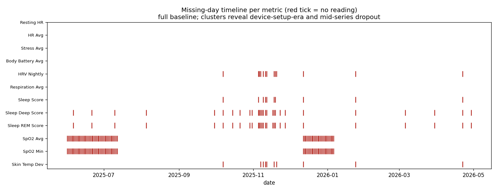
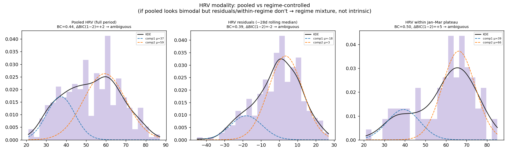
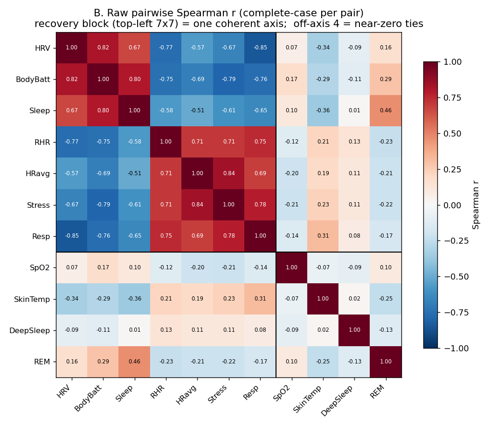
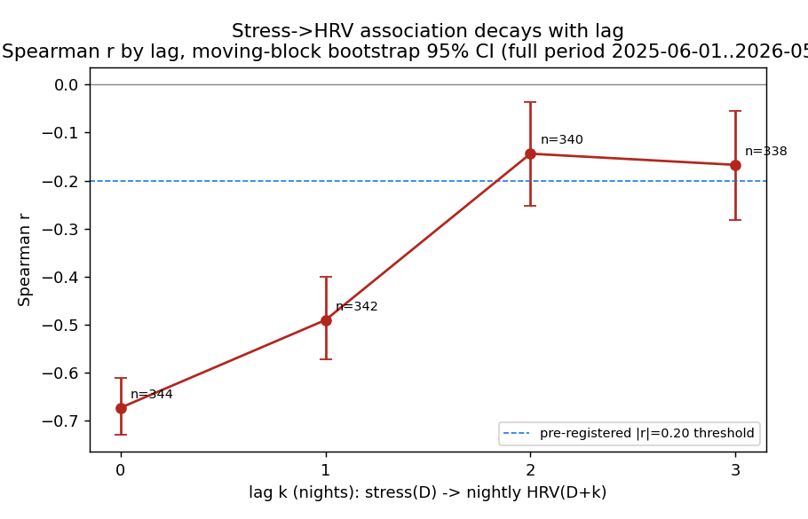
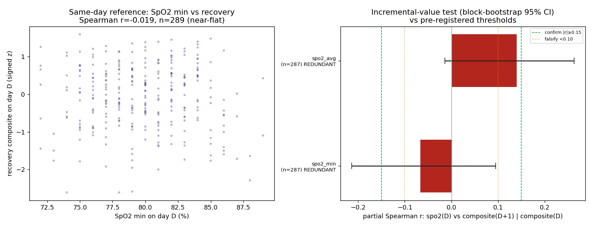
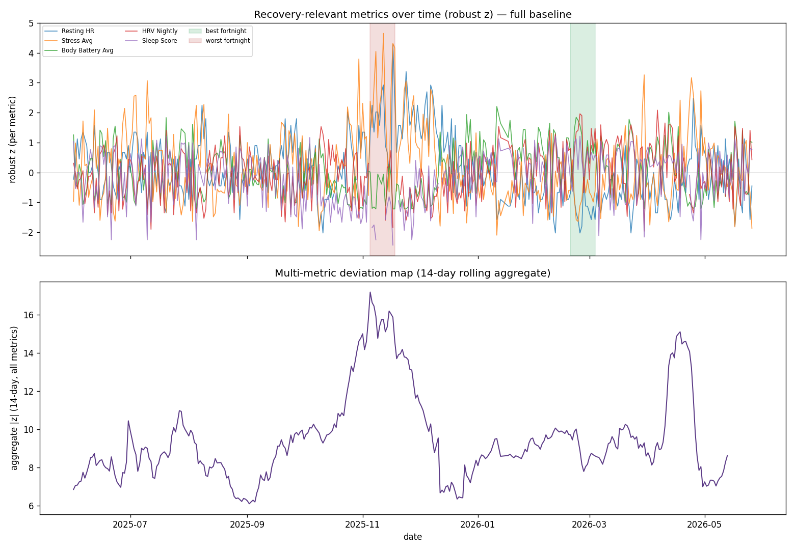
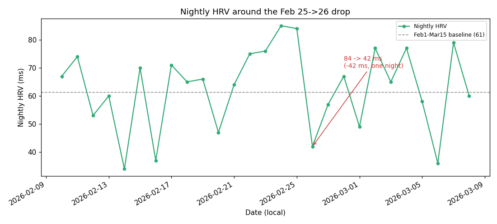
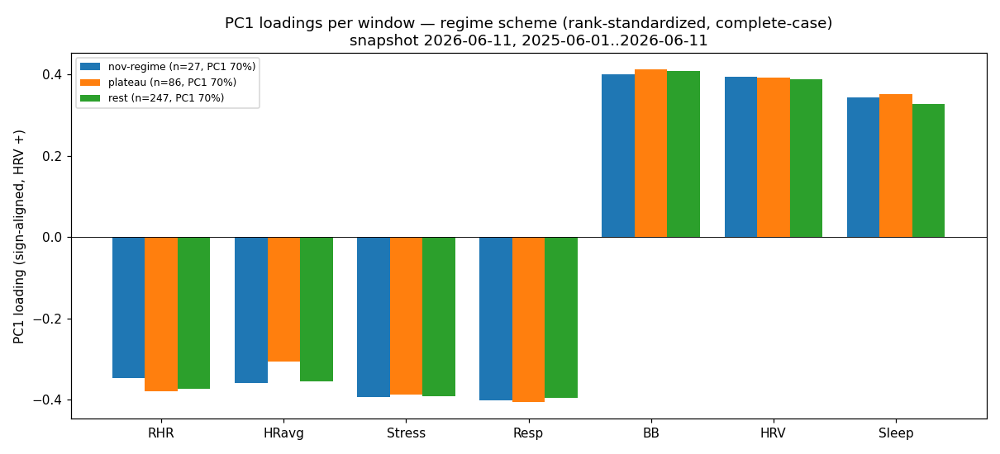
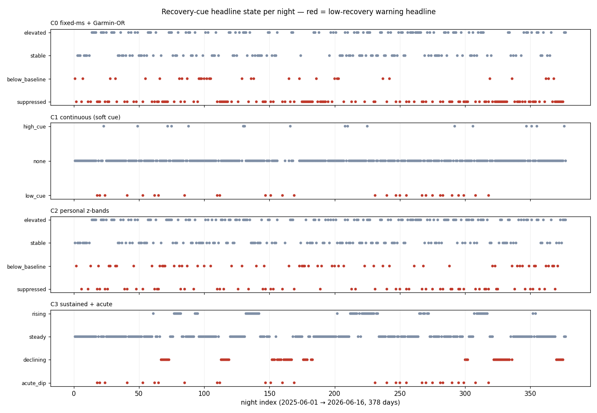
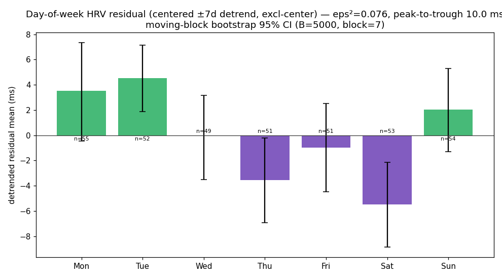

The findings pages show what a year of wrist data revealed. This page is
the how: the working method behind them — built so that an AI assistant analyzing
personal health data stays honest, repeatable, and auditable. No prior familiarity with the
tools assumed; everything is explained from scratch.
First — what is doing the analysis?
The analysis was done with the help of an AI coding
agent — software you talk to in plain language that can also act: read the
project’s files, write and run small programs, draw charts, and edit documents, the way a
developer would at a keyboard. “Agent” simply means it takes actions, not just holds a
conversation. (The specific tool here is Claude Code; the ideas below are general.)
That power is also the problem. Left to improvise, such an assistant is
inconsistent: it might analyze the same data two different ways
on two different days, forget a project rule, quietly skip a sanity check, or present a lucky
fluke as a result. For ordinary code that’s annoying. For health data, where it is
easy to find patterns that aren’t real, it’s dangerous.
?
The one term you need: a “skill”
A skill is a written playbook we hand the agent — durable, project-specific
instructions it must follow for a given kind of task. A skill is not code that runs; it is
guidance the agent reads and obeys, every time. Skills turn a clever-but-improvising
assistant into a disciplined one that works the same way on Monday as on Friday.
Why we built skills
Different parts of the project need different expertise and different rules. So instead of one
giant instruction sheet, we wrote several focused skills — each owning one layer of the work.
Each skill captures hard-won knowledge for its layer so it never has to be
rediscovered: where the data lives and how it’s shaped, how to compute statistics correctly, how
to lay out a readable chart, how to investigate a question without fooling yourself. Six skills
cover this project:
Skill
What it makes the agent good at
Garmin data
Reading the watch’s raw files correctly — the exact field names, units, and quirks of the device.
Data analysis
Computing statistics and building charts the right way; never inventing numbers in the display layer.
Analytical dashboard
Information hierarchy and chart choice — comprehension over decoration (Tufte, Few, Knaflic).
UX design
Visual style, spacing, typography, color — the calm, scannable look of these very pages.
Testing
Writing disciplined tests that cover the cases that matter and skip the redundant ones.
Finding analyst
The one this page is mostly about — how to investigate a question about the health data and produce evidence that can be trusted.
The rest of this page zooms into that last skill, because it is where the findings came from —
and where the two ideas you asked about, templates and recipes, live.
The trap the finding-analyst skill guards against
Analyzing a year of one person’s health data is a minefield of believable
mistakes. The skill exists to walk through it without stepping on one:
Patterns in noise. Random data always contains shapes; stare long enough and you’ll “find” something. The method demands an effect be sizeable and survive a real test, not just look suggestive.
Too many questions. Ask a metric 50 questions and a couple will “pass” by luck. The method counts how many comparisons were made and treats lone hits from a wide scan as mere leads.
“Moves together” ≠ “causes”. Two metrics rising together can share a hidden common cause. The method actively tries to explain a link away before believing it.
Seasons in disguise. A metric can look like it has “two modes” only because a calm month and a bad month were blended. The method re-checks inside a single period.
A moving ruler. Judging “normal” against only the recent few weeks can hide a slow slump — the ruler drifts with the very thing you’re trying to measure.
Two tools enforce this discipline: templates give every investigation the same honest
skeleton, and recipes give it a set of trusted, pre-vetted techniques.
Templates — every investigation has the same skeleton
A “template” here is a fill-in-the-blanks document. Each investigation (we call one a
run) copies the same set of templates into its own dated folder, so every run is built
the same way and can be re-read months later.
The templates force the steps that are easiest to skip — and skipping them is
exactly how analyses go wrong. In order, a run fills in:
01 · question
What are we asking, and what would change our mind? The exact question, dates, and metrics. For a true test, the prediction and the pass/fail rule are written before looking at the data — so you can’t move the goalposts. If the question quotes a number seen elsewhere, it’s checked against the data first.
02 · data profile
Is the data even fit to answer this? How many days are present, what’s missing and where, and how nulls and impossible values are handled — before any analysis.
03 · analysis
The actual program. A short script that reads a frozen copy of the data and applies the chosen recipes. It names its data source at the top so the result can be reproduced exactly.
04 · plots
The charts. Every chart carries a title, units, date range, and any smoothing — an unlabeled chart is not allowed as evidence. These are the very images you see on the findings pages.
05 · findings
What we now believe, and how sure we are. Each finding states the effect size, the evidence, the technique used, the “so what”, the caveats — and a confidence label.
06 · review
An adversarial self-check. The run walks a fixed checklist of quality gates. Crucially, this step can only lower a confidence label, never raise it — so the check can’t flatter the result.
07 · promotion
Does this earn a place in the permanent record? Only findings that survive review are written into the durable trust record, with their date, sample size, and caveats attached.
Because the skeleton is identical every time, anyone can open a run folder and audit it: the
question came first, the data was profiled, the chart is labeled, the confidence was earned not
assumed. (Run folders contain raw personal health data, so they stay on the
local machine; only this curated presentation is shared.)
Recipes — a catalog of trusted techniques
If templates are the shape of an investigation, recipes are the methods it
can reach for. A “recipe” is one named, written-down analysis technique — what question it
answers, how to run it, and, most importantly, how it can mislead you and what to do about
that.
Recipes exist for three reasons. They give everyone a shared vocabulary
(“this used the lagged-correlation recipe”), they carry their hard-won caveats so the same
mistake isn’t repeated, and they track a trust status:
validated
a real, trusted investigation has used it successfully ·
candidate
written down and sound, but not yet battle-tested enough to rely on
Below is the actual catalog. Pick a technique to see, in plain terms, what it asks, the trap
it’s built to avoid, and a real chart it produced in these findings.
Describe the data
Find relationships
Find events in time
Structure of the whole
Design a display rule
Missing-data pattern
validated
When did a sensor stop recording — and do the gaps line up with anything that would change how we read the data?
It asks
“Which days are missing for each metric, and are the gaps random or clustered?”
The trap it avoids
Treating a gap (no reading) as if it were a real low value, or mistaking an early device-setup gap for a health event. It also separates a true gap from a genuine zero.

Demo. Each red tick is a missing day; SpO₂’s two solid blocks are device-setup gaps, not health events.
→ Produced the coverage finding on General: the autonomic core is complete, SpO₂ has two structural gaps.
Distribution shape
validated
Does a metric cluster around one typical value, or two? Is it lopsided?
It asks
“Is this one hump or two — a single state, or a switch between two?”
The trap it avoids
A “two-humps” call is checked three independent ways (a shape number, a model comparison, and the naked eye) because any one can be fooled — and it re-checks inside a single calm period, since two apparent humps are usually just two seasons blended together.

Demo. Three views of nightly HRV — each a single broad peak, no genuine second hump.
→ Produced the headline HRV finding on HRV: it is one continuous signal, not two modes.
Correlation sweep
validated
Across all the metrics at once, which ones move together?
It asks
“For every possible pair of metrics, how strongly do they rise and fall together?”
The trap it avoids
It ranks pairs by a measure that a few outliers can’t distort, requires enough overlapping days, and treats every hit from such a broad scan as a lead to check, never a conclusion.

Demo. Every pair, color-coded; the tightly-linked “recovery block” separates cleanly from the near-zero off-axis metrics.
→ Produced the central result on General: almost everything collapses onto one recovery↔stress axis.
Does A predict later B?
validated
Does today’s value of one metric predict tomorrow’s — or next week’s — value of another?
It asks
“Does metric A on a given day relate to metric B one, two, … days later?”
The trap it avoids
Days are paired only when they are truly the right number of days apart (never bridging a gap). And because today often just echoes yesterday, the confidence range is computed with a method built for streaky data — an ordinary test would overstate it.

Demo. The stress→HRV link by delay: strong same-night, still real the next night, gone within a few days.
→ Produced the lead-indicator finding on HRV: a hard day predicts a low HRV the next night.
Rule out a common cause
validated
Does A still relate to B once we hold a likely shared cause constant?
It asks
“If two things move together, is it a direct link — or are they both driven by a third thing?”
The trap it avoids
Holding a third factor constant removes only its simple influence. If two metrics are computed from the same raw signal, a surviving link may still be that shared origin — so the method says so out loud rather than claiming an independent channel.

Demo. Once today’s recovery is accounted for, overnight SpO₂ adds nothing — both estimates straddle zero.
→ Produced the “not a recovery signal” finding on General: overnight SpO₂ is a health flag, not a recovery input.
Unusual-stretch scan
validated
Were there stretches of days when many metrics were unusual at the same time?
It asks
“Scanning the whole year, which windows show simultaneous deviation across several metrics?”
The trap it avoids
“Unusual” is measured against your personal normal in a way outliers can’t distort — and the rule is rank, then look: every flagged window is overlaid on the full timeline before it’s believed, because sparse early-data periods love to produce false alarms.

Demo. The year scanned for unusual stretches — a sharp November peak, a calm winter trough, a smaller spring bump.
→ Produced the regime map on General and pinpointed the November low-recovery crash.
When did “normal” shift?
validated
When exactly did a metric’s baseline level change — and when did it return?
It asks
“Where are the edges of a regime — its start, and the day it truly ended?”
The trap it avoids
“Returned to normal” is defined strictly as after the last bad day, so a brief mid-slump rebound can’t be mistaken for the end. Exact edge dates are treated as soft, not precise.
Demo. The recovery score across autumn — below its normal band for five weeks, not the two it first appeared.
→ Produced the regime-extent finding on Recovery: the November crash is a five-week event.
Best vs worst stretch
validated
What separates the best stretch of the year from the worst, and by how much?
It asks
“Put two periods side by side — how big is the difference on each metric?”
The trap it avoids
Picking the windows by an outcome and then “testing” on the same data is circular — so the run declares up front how the windows were chosen.
Demo. Every recovery metric across the crash’s phases — stress worst first, resting heart rate slowest to recover.
→ Produced the “why one composite” evidence on Recovery: the metrics are all suppressed together.
Is one day an outlier?
candidate
Is a single dramatic day-over-day move genuinely unusual — and what moved with it?
It asks
“How rare is this one-night change, and did other metrics move the same night?”
The trap it avoids
A single day can’t replicate, so it’s treated as the weakest kind of evidence. Coverage is checked first, because a watch’s nightly number can jump from a short or partial night, not only from the body.

Demo. A single night’s HRV halved then bounced back within two — judged against the spread of all night-to-night changes.
→ Produced the February case study on HRV: a single night can crash and rebound — read the trend, not the night.
Is the structure stable?
validated
Do the relationships between metrics stay the same in good periods and bad ones?
It asks
“Is the underlying pattern linking the metrics the same in a crash as in a calm month?”
The trap it avoids
It compares the pattern across periods with a similarity score and confidence ranges, and pre-commits that a mere weakening of links (not a reshaping) does not count as instability.

Demo. The metrics’ contributions to the main pattern are near-identical across three very different periods.
→ Produced the “same axis everywhere” finding on General: one fixed scoring is justified.
What counts as “normal”?
validated
Should “normal for you” be your whole history, or a rolling recent window?
It asks
“Which definition of a personal baseline correctly flags a known-bad month?”
The trap it avoids
Candidates are judged on a scorecard fixed in advance, and the test includes a deliberately “cheating” hindsight baseline — if even that fails a criterion, the criterion is measuring the wrong thing, not the baselines.
Demo. Rolling baselines absorb the very slump they should flag; the whole-history baseline holds it down.
→ Produced the most counter-intuitive choice on Recovery: use an expanding personal baseline, never a trailing window.
Types, or a spectrum?
validated
Do days fall into a few distinct “types”, or form one smooth spectrum?
It asks
“Are there real recovery-day archetypes, or just degrees along a single scale?”
The trap it avoids
Grouping software always returns groups — so extra tests are run that can tell a genuine type from an arbitrary slice of a spectrum. Here they correctly found a spectrum.
Demo. The days form one elongated cloud with a smooth gradient — not separated blobs.
→ Produced the “no archetypes” finding on Recovery: recovery is a continuum, not discrete states.
Pick the best label rule
candidate
A label shown in the app looks unreliable — which replacement rule is best?
It asks
“Lined up on one fair scorecard, which candidate rule is most sensitive and least jumpy?”
The trap it avoids
The current rule is run exactly as shipped (not re-implemented from memory) as the baseline, every candidate is scored identically, and a “no-label-at-all” option is always included — because often the labeling itself, not where the line is drawn, is the problem.
Status
candidate — sound and already used once, but kept provisional until more runs rely on it.

Demo. Every same-night category flickers night to night; only dropping the category or smoothing it is stable.
→ Produced the cue redesign on HRV: show a continuous signal, drop the status word.
Real weekly rhythm?
candidate
Is an apparent day-of-week pattern real, or just noise?
It asks
“After removing slow seasonal drift, is there a genuine weekday effect?”
The trap it avoids
Streaky data manufactures fake cycles, so significance is tested with a method that respects that streakiness (an ordinary test would massively overstate it). It also names the calendar label rather than guessing the behavioral cause.
Status
candidate — the careful version of an earlier, weaker analysis it replaced.

Demo. Each weekday’s effect with an honest confidence range — Saturday genuinely low, Tuesday high.
→ Produced the weekly-rhythm finding on HRV: a real ~10 ms day-of-week swing.
How a finding earns trust
Not every result is treated equally. Each finding gets a confidence label, and that label
controls how far it’s allowed to travel.
tentativeA single look. One technique, no replication — often a lone hit from a wide scan. It stays in the run folder and seeds a future question; it is never asserted.
provisionalSolid, with a ceiling. Several techniques agree or a pre-declared test passed, but a real limit remains — a possible hidden cause, or a one-of-a-kind event. Carried with its caveats attached.
confidentEarned and unqualified. Clears every quality gate with no remaining doubt, and survived the adversarial self-check. Only these drive real decisions.
Before a finding can be promoted, the self-review walks a fixed checklist — and it can only
ever lower the confidence, never raise it. A check that could talk you up is not a
check. The gates:
Gate
The question it forces
Question
Concrete, with dates and metrics fixed — and the prediction written before the data was opened?
Data
Source pinned to a frozen copy; coverage and missing days measured; nulls and impossible values handled?
Statistical
Effect size before any p-value; spread and sample size shown; the right summary for skewed data; how many comparisons were made?
Visual
Every chart actually looked at; units sane; gaps not bridged into fake trends; a few values spot-checked by hand?
Interpretation
A clear “so what”; alternatives and confounders named; exploratory work labeled as such; descriptive, never medical advice?
Findings
Confidence matches the evidence; snapshot date, date range, sample size, and caveats all recorded?
From a technique to the plots you saw
Putting it together, every chart on the findings pages came down the same chain:
# the path from a question to a trusted chart
question (prediction fixed in advance)
↓ profile the data (coverage, gaps, bad values)
↓ apply recipes (trusted techniques, on a frozen copy of the data)
↓ annotated plots(titled, units, date range → these are the findings-page charts)
↓ findings + a confidence label
↓ adversarial self-review (can only lower confidence)
↓ promote only the confident ones to the durable record
↓ curate the strongest into the presentation you can read
So when a findings page shows a chart and says “confident,” that label is the visible tip of
this whole machine: a pre-registered question, a vetted technique with its caveats, a labeled
chart that was inspected by eye, and a review that was only ever allowed to make the claim
weaker. The discipline is the point — it’s what lets a one-person, one-year dataset say anything
worth trusting at all.
✦
Where to go next
See the method in action: General (what the data is),
Recovery Score (a score built and validated step by step), and
HRV (reading one noisy signal honestly).